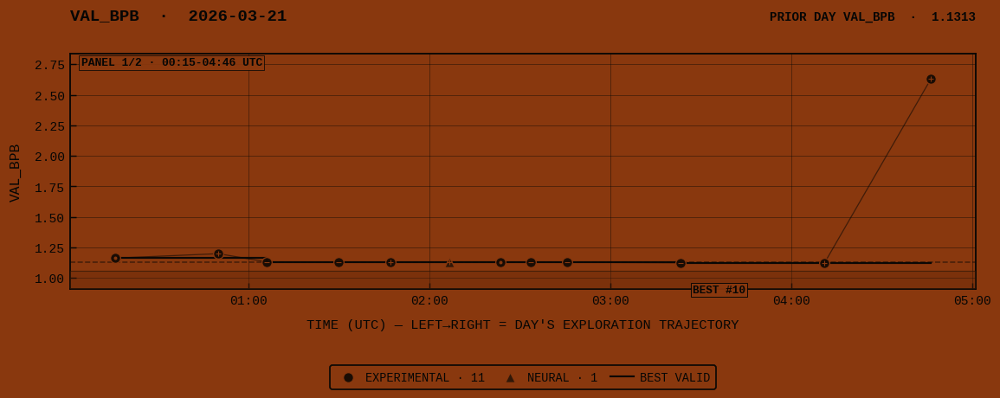
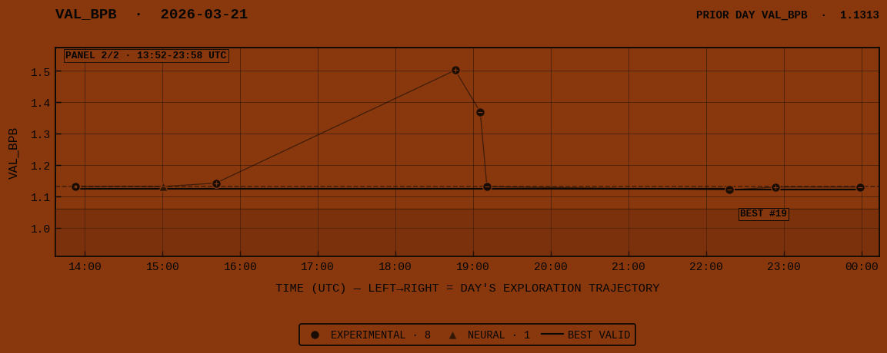

DAILY RESEARCH REPORTBACK TO MASTER SHEET2026-03-21DAILY RESEARCH REPORTBACK TO MASTER SHEET2026-03-21
DAILY RESEARCH REPORTBACK TO MASTER SHEET2026-03-21DAILY RESEARCH REPORTBACK TO MASTER SHEET2026-03-21| 2026-03-21 | 18 | 21 |
- **exact evidence:** SQLite `metrics_json` shows `{"val_bpb": 1.1428, "val_bpb_source": "commit_message"}`. `audit_daily_accuracy.is_commit_only` returned True (only sources for the row are `git_commit` rows). `render_day.best_date(rec) == "2026-03-20"` matches the page; `mtime_iso = 2026-03-21T00:04:49Z` is correctly converted to local CDT 2026-03-20.
- **date:** 2026-03-21
- **exact evidence:** `metrics_json = {"val_bpb": 1.124, "val_bpb_source": "commit_message"}`. No corresponding training_log was scraped for this commit's PR315+TTT path on 2026-03-21.{
"date": "2026-03-21",
"fatal": 0,
"headline_metric": "val_bpb",
"raw_records": 337,
"render_records": 310,
"test_rows": 21,
"warnings": 18
}

| VAL_BPB SPREAD | n | min | median | max | download |
|---|---|---|---|---|---|
| LEADERBOARD TRANSFORMER VARIANTS | 8 | 1.1210 | 1.1288 | 1.1318 | — |
| CRAWLER ABLATION CONTROL SET | 5 | 1.1295 | 1.1326 | 1.1982 | — |
| PROGRESSIVE MLP AND FRACTAL CADENCE TESTS | 4 | 1.1428 | 1.4355 | 2.6276 | — |
| TTT8 STRIDE-32 TEST FAMILY | 3 | 1.1307 | 1.1313 | 1.1313 | download |
| STATE-SPACE TTT VARIANT | 1 | 1.1303 | 1.1303 | 1.1303 | — |
| ALL VALID | 21 | 1.1210 | 1.1313 | 2.6276 | — |
| # | TIME | HW | ABLATION | VAL_BPB | STATUS | Δ % | OPEN |
|---|---|---|---|---|---|---|---|
| 1 | 00:15 | — | Log exp A/B results: both behind baseline, zlib fallback bug found (×7) | 1.1619 | OK | ↑2.7% | details |
| 2 | 00:49 | — | Log v2 TTT-only + XSA=3 result: 1.1982 BPB (worse than 1.1301 baseline) (×7) | 1.1982 | OK | ↑5.9% | details |
| 3 | 01:05 | — | Log v2 noXSA result: 1.1538/1.1315 BPB — TTT v2 hurt, no edge over baseline (×7) | 1.1315 | OK | ↑0.0% | details |
| 4 | 01:29 | — | Log exp D result: 1.1295 BPB — new best (-0.0008 vs baseline) (×7) | 1.1295 | OK | ↓0.2% | details |
| 5 | 01:47 | — | Log exp D seed 42: 1.1307 BPB — confirms improvement (mean 1.1301) (×7) | 1.1307 | OK | ↓0.1% | details |
| 7 | 02:23 | — | Log exp D seeds 7+137: both over size limit (×7) | 1.1313 | OK | 0.0% | details |
| 8 | 02:33 | — | Add TTT stride-32 eval-only experiment experiment: TTT 8ep + stride 32 eval-o… | 1.1303 | OK | ↓0.1% | details |
| 9 | 02:45 | — | Log D+SAM+PR315tricks: 1.1274 BPB new best; add SAM to pr315 run script (×7) | 1.1274 | OK | ↓0.3% | details |
| 10 | 03:23 | — | Log PR315+TTT results: 1.1240 BPB (invalidated — TTT now banned) (×7) | 1.1240 | OK | ↓0.6% | details |
| 11 | 04:11 | — | Add PR374 12L/2KV/2.75xMLP experiment experiment: 12L/2KV/2.75xMLP + train@10… | 1.1246 | OK | ↓0.6% | details |
| 12 | 04:46 | — | Add fractal cadence test cadence test cadence experiment: F/N alternation pat… | 2.6276 | OK | ↑132.3% | details |
| 13 | 13:52 | — | Add PR #198 clone script — SOTA baseline + our edges (XSA, TTT 3ep) (×2) | 1.1326 | OK | ↑0.1% | details |
| 15 | 15:41 | — | Add PR #180 progressive MLP test test A/B test experiment (×2) | 1.1428 | OK | ↑1.0% | details |
| 16 | 18:46 | 1×GB10 | A_uniform.log | 1.5020 | OK | ↑32.8% | training_log |
| 17 | 19:05 | 1×GB10 | B_progressive.log | 1.3691 | OK | ↑21.0% | training_log |
| 18 | 19:10 | — | Add exact clone of PR #254 — best pending SOTA (1.1313 BPB) (×7) | 1.1313 | OK | 0.0% | details |
| 19 | 22:17 | — | Add XSA last 3 layers to #254 SOTA clone (×7) | 1.1210 | OK | ↓0.9% | details |
| 20 | 22:53 | — | Add 3 SOTA improvement experiments: MTP, SwiGLU, Vocab1536 (×7) | 1.1303 | OK | ↓0.1% | details |
| 21 | 23:58 | 8×H100 | run_s1337.log (×3) | 1.1301 | OK | ↓0.1% | training_log 1training_log 2training_log 3 |
| # | TIME | HW | ABLATION | VAL_BPB | STATUS | Δ % | OPEN |
|---|---|---|---|---|---|---|---|
| 6 | 02:06 | — | Log exp D seed 7: 1.1313 BPB but 16.18 MB — over size limit (×7) | 1.1313 | OK | 0.0% | details |
| 14 | 15:00 | — | Clean start from PR #198 record + XSA + TTT SGD 3ep (×2) | 1.1318 | OK | ↑0.0% | details |